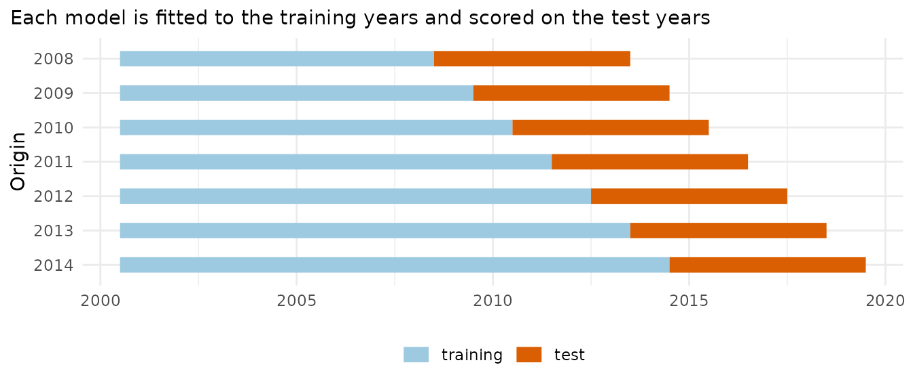
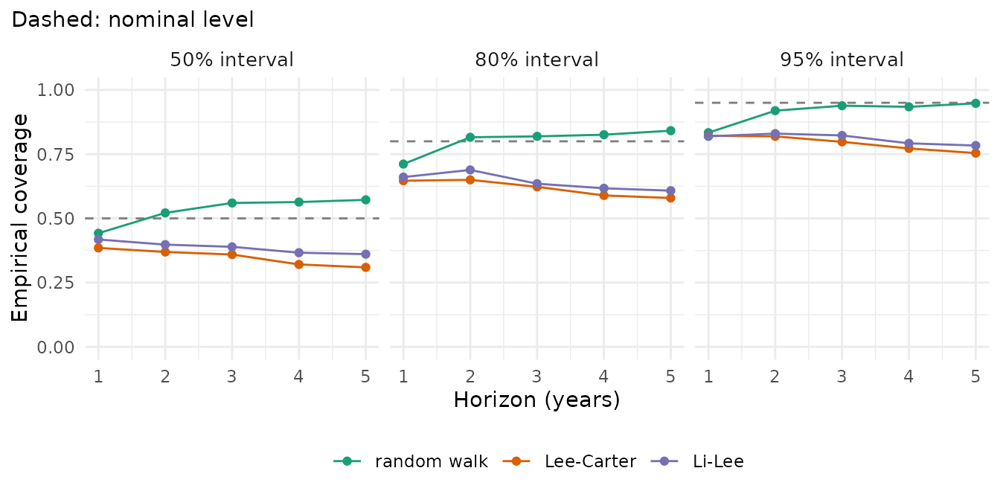
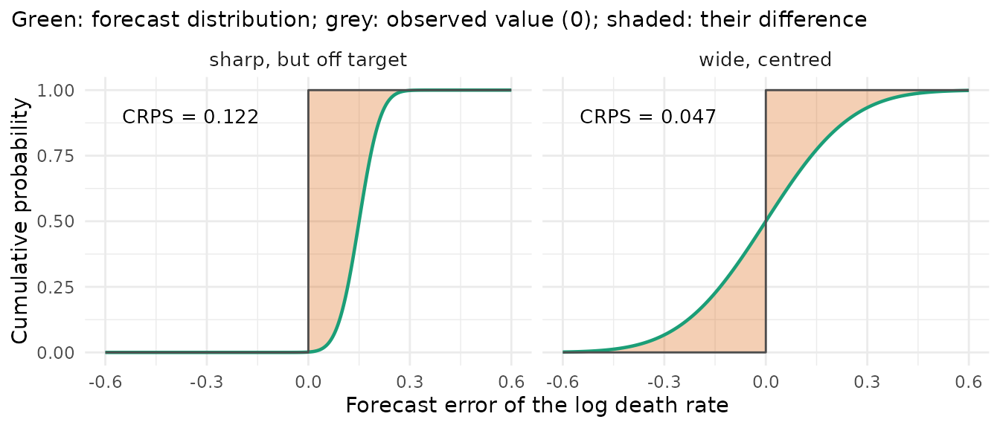
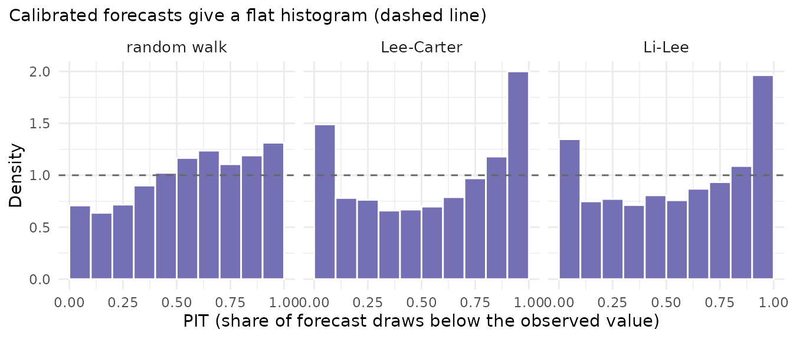
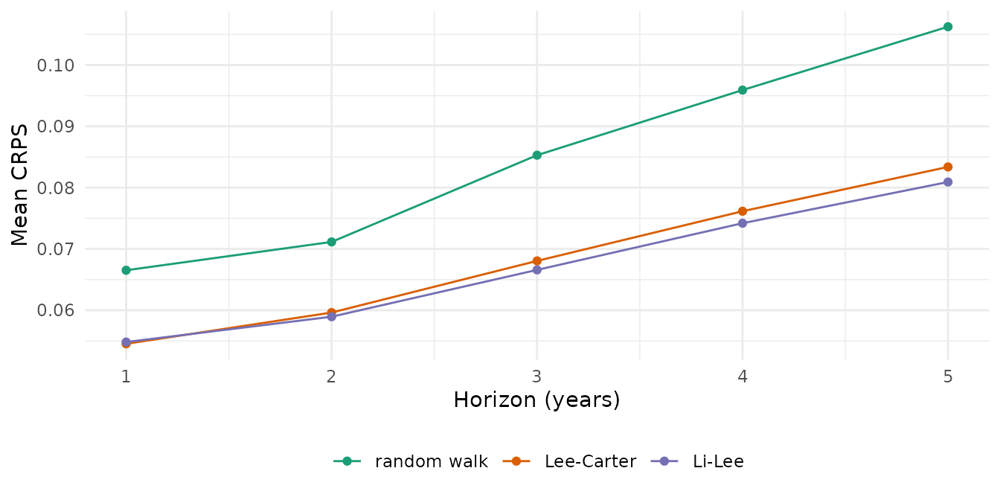

How good is a forecast? The future is unknown, but the past can be used as a test: fit a model to the years up to some year in the past (the origin), forecast the following years, and compare the forecast with what was observed. Repeating this from several origins gives a rolling-origin backtest (Tashman 2000). This vignette explains the design and the scores, and compares three models on one data set.
Data and models
Deaths and populations in England by sex and deprivation quintile, 2001-2019 (ONS). Three models, chosen as examples:
- a random walk with drift per age
(
rwd()): each log rate continues its average change of the past. It is a standard benchmark in forecasting: a model that does not beat it adds little; -
Lee-Carter (
lee_carter()), one model per stratum; -
Li-Lee (
li_lee(common_by = "sex")), quintiles of each sex pooled around a common trend.
library(mortensor)
library(data.table)
x <- mt_data(deaths = ons_data, population = ons_data, by = c("sex", "imd_decile"), age = "age_group",
value = c(deaths = "all_causes", population = "population"))
x <- mt_as_exposure(x, type = "midyear")
x <- mt_group_levels(x, "imd_decile", function(d) paste0("Q", ceiling(as.numeric(d) / 2)), name = "quintile")
models <- list("random walk" = rwd(), "Lee-Carter" = lee_carter(), "Li-Lee" = li_lee(common_by = "sex"))The design
Seven origins, 2008 to 2014, each forecasting five years:
mt_plot_backtest_design(x, origins = 2008:2014, h = 5)
Every model, and every preprocessing step such as smoothing, is fitted anew at each origin from the training years only, so no information from the test years leaks into the forecast. Each test year is forecast several times from different origins and horizons, which averages over the particular events of a single period.
bt <- mt_compare(models, x, origins = 2008:2014, h = 5, n_draws = 200, quantities = "life_expectancy")
#> Warning in report_fit_problems(diagnostics, spec$label, classes): Li-Lee
#> (common by sex): Li-Lee: the AR(1) coefficient of the stratum index is bounded
#> at |phi| = 0.99 in 1 stratum/strata (female.Q4): their deviations from the
#> common trend are close to a unit root and revert very slowly; coherence may not
#> suit them. (diagnostics of 10 stratum/strata of the fit).
#> Warning in report_fit_problems(diagnostics, spec$label, classes): Li-Lee
#> (common by sex): Li-Lee: the AR(1) coefficient of the stratum index is bounded
#> at |phi| = 0.99 in 1 stratum/strata (female.Q4): their deviations from the
#> common trend are close to a unit root and revert very slowly; coherence may not
#> suit them. (diagnostics of 10 stratum/strata of the fit).The forecasts are predictive: they describe the observed death rates of the test years, including the Poisson noise of the counts, because the observed rates are what they are compared with.
Scores
Interval coverage
A 95% interval should contain the observed value in about 95% of the cases. The empirical coverage is the share of observed values inside the interval: below the nominal level, the intervals are too narrow; above it, too wide.
mt_plot_coverage(bt)
Coverage alone can be gamed: a very wide interval always covers. It is read together with a score that also rewards narrow intervals.
CRPS
The continuous ranked probability score (CRPS) compares the whole forecast distribution with the observed value: it is the integral of the squared difference between the forecast’s cumulative distribution and a step at the observed value (Gneiting and Raftery 2007). The figure shades the difference between the two curves; squared and summed over the axis, it gives the CRPS:

A forecast that puts its probability close to the observed value has a small area. The CRPS punishes both a distribution that is off target and one that is wider than necessary. For a forecast without uncertainty it equals the absolute error, so it is in the unit of the forecast quantity: for log death rates, a CRPS of 0.05 means errors of roughly 5% of the rate; for life expectancy it is in years. Lower is better.
The weighted interval score (WIS, Bracher et al. 2021) approximates the CRPS from a few central intervals; it is reported as well and ranks models in the same way.
Point errors
mae and rmse are the mean absolute and the
root mean squared error of the forecast median: they ignore the
intervals. mase divides the absolute error by the mean
absolute year-to-year change of the training data (Hyndman and Koehler
2006): below 1, the forecast errs less than the typical change of a
single year.
PIT
The probability integral transform (PIT) is the share of forecast draws below the observed value. For calibrated forecasts it is spread evenly between 0 and 1, so its histogram is flat. A U shape means that the observed values often fall in the tails, outside intervals that are too narrow; a slope means that the forecasts are systematically too high or too low (Gneiting, Balabdaoui and Raftery 2007).
mt_plot_pit(bt)
All three histograms rise to the right: the observed rates were more often above the forecast median than below it. The forecasts were too optimistic, because the decline of mortality in England slowed after 2011. Lee-Carter and Li-Lee also pile up at both ends (a U shape): their intervals are too narrow.
Comparing the models
mt_score_table(bt, metrics = c("crps", "rmse", "cov80", "cov95"))
#> model crps rmse cov80 cov95 crps_le rmse_le cov80_le cov95_le
#> <fctr> <num> <num> <num> <num> <num> <num> <num> <num>
#> 1: random walk 0.0850 0.180 0.803 0.915 0.293 0.503 0.603 0.820
#> 2: Lee-Carter 0.0683 0.139 0.618 0.793 0.293 0.508 0.620 0.814
#> 3: Li-Lee 0.0671 0.132 0.642 0.810 0.338 0.603 0.611 0.806The columns without suffix score the log death rates of all cells;
the columns with _le score life expectancy at birth (in
years), computed from the same forecasts. Rates and life expectancy can
rank models differently, because life expectancy depends on how the
errors of the ages add up: for the rates Li-Lee is the most accurate
(CRPS 0.067) and the random walk the least (0.085), for life expectancy
the random walk and Lee-Carter are equal (0.29 years) and Li-Lee is the
least accurate (0.34 years). Choose the target that the analysis is
about.
mt_plot_scores(bt)
All three models get worse with the horizon, as they should. The random walk has wide intervals: its 95% coverage is close to nominal (0.92), and its 50% and 80% intervals cover about as often as they should. The 95% intervals of Lee-Carter and Li-Lee cover 0.79 and 0.81 of the observed rates, fewer at longer horizons: they describe the uncertainty of a fixed trend and the Poisson noise of the deaths, while the trend of English mortality changed after 2011. “Tuning and recalibration” shows how to widen intervals to the errors of recent forecasts, and “Choosing and combining models” how mixtures of models do.
Life expectancy by horizon
Raftery et al. (2013) check probabilistic forecasts of life
expectancy by the coverage of their 80%, 90% and 95% intervals and by
the standardised absolute predictive error (SAPE): the absolute error of
the median, divided by the standard deviation of the forecast
distribution and multiplied by sqrt(pi / 2). Its mean is 1
when the forecast distribution is correct and normal; above 1, the
intervals are too narrow. measures adds both to
mt_score():
s <- mt_score(bt, by = c("model", "horizon"), target = "life_expectancy", measures = c("sape", "cov90"))
s[, list(model, horizon, mae, sape, cov80, cov90, cov95)]
#> model horizon mae sape cov80 cov90 cov95
#> <fctr> <num> <num> <num> <num> <num> <num>
#> 1: random walk 1 0.2253386 1.430122 0.6428571 0.7000000 0.7571429
#> 2: random walk 2 0.3047631 1.302902 0.6000000 0.7714286 0.8857143
#> 3: random walk 3 0.4087531 1.373876 0.5714286 0.7571429 0.8428571
#> 4: random walk 4 0.5226022 1.440622 0.5857143 0.7142857 0.7857143
#> 5: random walk 5 0.5906862 1.388070 0.6142857 0.7000000 0.8285714
#> 6: Lee-Carter 1 0.2237034 1.369782 0.6428571 0.7000000 0.7857143
#> 7: Lee-Carter 2 0.2988562 1.294863 0.6714286 0.8428571 0.9000000
#> 8: Lee-Carter 3 0.3997773 1.383686 0.6000000 0.7571429 0.8571429
#> 9: Lee-Carter 4 0.5270525 1.550064 0.5714286 0.7285714 0.8000000
#> 10: Lee-Carter 5 0.6168905 1.594811 0.6142857 0.6714286 0.7285714
#> 11: Li-Lee 1 0.2671036 1.395208 0.6285714 0.7000000 0.8285714
#> 12: Li-Lee 2 0.3352442 1.273501 0.6571429 0.7428571 0.8428571
#> 13: Li-Lee 3 0.4615053 1.404290 0.6285714 0.7571429 0.8000000
#> 14: Li-Lee 4 0.5857525 1.536526 0.6000000 0.6857143 0.7857143
#> 15: Li-Lee 5 0.6797984 1.568170 0.5428571 0.6857143 0.7714286The mean SAPE is 1.3 to 1.6 for all three models at every horizon: the errors of life expectancy are larger than the spread of the forecasts implies, and the 90% intervals hold 67% to 84% of the observed values. Raftery et al. report a mean SAPE of 1.04 for their model of male life expectancy at birth, out of sample over ten years.
Revisions between origins
A forecast also changes when a year of data is added. Stoeldraijer et
al. (2013) name robustness as a purpose of a forecast: small changes in
the observations should change the forecast only modestly. They give no
measure. measures = "revision" gives the mean absolute
change of the forecast median of each cell (stratum, age group, year)
between consecutive origins, a measure of this package:
mt_score(bt, measures = "revision")[, list(model, crps, revision)]
#> model crps revision
#> <fctr> <num> <num>
#> 1: random walk 0.08502155 0.11590834
#> 2: Lee-Carter 0.06834583 0.03739882
#> 3: Li-Lee 0.06709049 0.03414229
mt_score(bt, target = "life_expectancy", measures = "revision")[, list(model, crps, revision)]
#> model crps revision
#> <fctr> <num> <num>
#> 1: random walk 0.2934839 0.2303523
#> 2: Lee-Carter 0.2925671 0.2187877
#> 3: Li-Lee 0.3379676 0.2452118The random walk revises its forecasts of the log rates by 0.12 per added year, three times as much as Lee-Carter (0.037) and Li-Lee (0.034). It starts from the observed rates of the last year, so their noise moves the whole forecast; the two models start from fitted rates. For life expectancy the revisions are alike (0.22 to 0.25 years), because the noise of the single age groups averages out. Accuracy and robustness can conflict (Stoeldraijer et al. 2013); here Li-Lee forecasts the rates both most accurately and most robustly.
Is the difference larger than chance?
Mean scores over seven origins depend on the particular years. The
Diebold-Mariano test (Diebold and Mariano 1995) asks whether two models
differ in accuracy by more than the origins vary.
mt_dm_test() computes it for each horizon from the mean
score of each origin, so the many cells of one forecast count once.
Forecasts from neighbouring origins overlap in their test years, so the
differences between origins are autocorrelated. By default the test
estimates their variance with the equal-weighted cosine (EWC) estimator
and takes critical values from a t distribution with few degrees of
freedom (Lazarus et al. 2018). varestimator = "daniell"
gives the fixed-smoothing test of Coroneo and Iacone (2020) with a
Daniell-kernel estimate. The older version, with the autocovariances up
to lag h - 1 and the small-sample correction of Harvey,
Leybourne and Newbold (1997), rejects a true null hypothesis too often
with few overlapping origins: in simulations with seven origins, in 10%
to 19% of the samples at the nominal 5% level, and in 27% with the
fallback to lag 0 of forecast::dm.test() (see
?mt_dm_test; varestimator = "acf" gives that
version without the fallback).
dm <- mt_dm_test(bt, ref = "Li-Lee")
dm[target == "rate", list(model, horizon, mean_diff, statistic, df, p_value)]
#> model horizon mean_diff statistic df p_value
#> <char> <fctr> <num> <num> <num> <num>
#> 1: random walk 1 0.0117078512 11.17200995 1 0.056832004
#> 2: random walk 2 0.0121981051 11.66561874 1 0.054439227
#> 3: random walk 3 0.0187062941 85.80335706 1 0.007419185
#> 4: random walk 4 0.0217150706 10.36381867 1 0.061237567
#> 5: random walk 5 0.0253279342 4.59073526 1 0.136541937
#> 6: random walk all 0.0179310510 9.03410903 1 0.070182752
#> 7: Lee-Carter 1 -0.0002869724 -0.09908812 1 0.937123793
#> 8: Lee-Carter 2 0.0006775856 0.18437807 1 0.883924895
#> 9: Lee-Carter 3 0.0014679661 0.46086351 1 0.725074982
#> 10: Lee-Carter 4 0.0019556634 0.81081784 1 0.566269381
#> 11: Lee-Carter 5 0.0024624184 0.80790403 1 0.567390174
#> 12: Lee-Carter all 0.0012553322 0.41249759 1 0.750933008A positive mean_diff means a higher CRPS than Li-Lee, so
a less accurate forecast. Li-Lee forecast the rates more accurately than
the random walk at every horizon, with p-values from 0.007 to 0.14 (0.07
over all horizons). Li-Lee and Lee-Carter differ little, with p-values
from 0.57 to 0.94: this backtest cannot tell them apart.
dm[target == "life_expectancy", list(model, horizon, mean_diff, statistic, p_value)]
#> model horizon mean_diff statistic p_value
#> <char> <fctr> <num> <num> <num>
#> 1: random walk 1 -0.03123928 -1.5703335 0.3609921
#> 2: random walk 2 -0.02758071 -1.0405313 0.4873564
#> 3: random walk 3 -0.03273421 -0.8868458 0.5381325
#> 4: random walk 4 -0.04788062 -1.0613540 0.4810573
#> 5: random walk 5 -0.08298369 -2.0305517 0.2913243
#> 6: random walk all -0.04448370 -1.3138241 0.4141789
#> 7: Lee-Carter 1 -0.03662197 -1.4811578 0.3780573
#> 8: Lee-Carter 2 -0.03362929 -1.1732706 0.4493507
#> 9: Lee-Carter 3 -0.04370171 -1.5140826 0.3715934
#> 10: Lee-Carter 4 -0.04705685 -1.8454361 0.3161362
#> 11: Lee-Carter 5 -0.06599281 -3.3113667 0.1867089
#> 12: Lee-Carter all -0.04540053 -1.7779056 0.3261777For life expectancy, the random walk and Lee-Carter were more
accurate than Li-Lee at every horizon, but no difference is significant
(p-values from 0.19 to 0.54). With seven origins the test has one degree
of freedom (df) and detects only large and consistent
differences. The row "all" averages over the horizons.
How far to trust a backtest
- Seven origins of one country are few, and the test years overlap; a
difference of a few percent in the CRPS can be noise, as
mt_dm_test()shows. - A backtest scores the past. If the future differs from the test period (a pandemic, a policy change), so will the accuracy.
- Compare models on the same origins, horizons and cells, as
mt_compare()does. Suppressed cells that were estimated are not scored.
References
Bracher J, Ray EL, Gneiting T, Reich NG (2021). Evaluating epidemic forecasts in an interval format. PLoS Computational Biology 17(2): e1008618.
Coroneo L, Iacone F (2020). Comparing predictive accuracy in small samples using fixed-smoothing asymptotics. Journal of Applied Econometrics 35(4): 391-409.
Diebold FX, Mariano RS (1995). Comparing predictive accuracy. Journal of Business & Economic Statistics 13(3): 253-263.
Gneiting T, Balabdaoui F, Raftery AE (2007). Probabilistic forecasts, calibration and sharpness. Journal of the Royal Statistical Society Series B 69(2): 243-268.
Gneiting T, Raftery AE (2007). Strictly proper scoring rules, prediction, and estimation. Journal of the American Statistical Association 102(477): 359-378.
Harvey D, Leybourne S, Newbold P (1997). Testing the equality of prediction mean squared errors. International Journal of Forecasting 13(2): 281-291.
Hyndman RJ, Koehler AB (2006). Another look at measures of forecast accuracy. International Journal of Forecasting 22(4): 679-688.
Lazarus E, Lewis DJ, Stock JH, Watson MW (2018). HAR inference: recommendations for practice. Journal of Business & Economic Statistics 36(4): 541-559.
Raftery AE, Chunn JL, Gerland P, Ševčíková H (2013). Bayesian probabilistic projections of life expectancy for all countries. Demography 50(3): 777-801.
Stoeldraijer L, van Duin C, van Wissen L, Janssen F (2013). Impact of different mortality forecasting methods and explicit assumptions on projected future life expectancy: the case of the Netherlands. Demographic Research 29(13): 323-354.
Tashman LJ (2000). Out-of-sample tests of forecasting accuracy: an analysis and review. International Journal of Forecasting 16(4): 437-450.